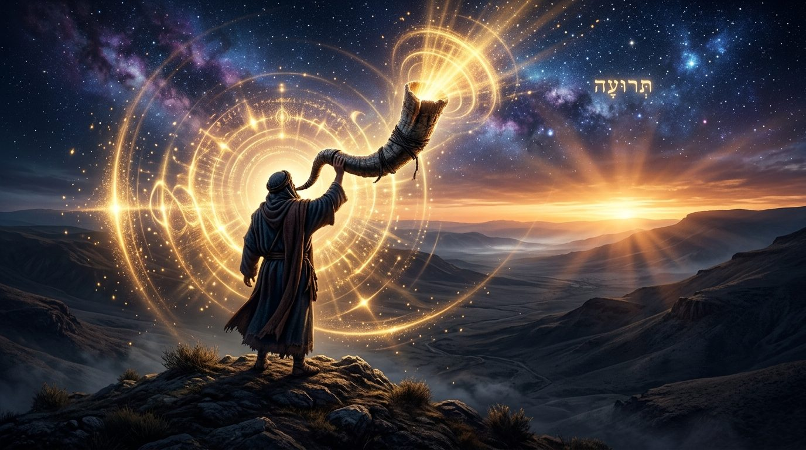
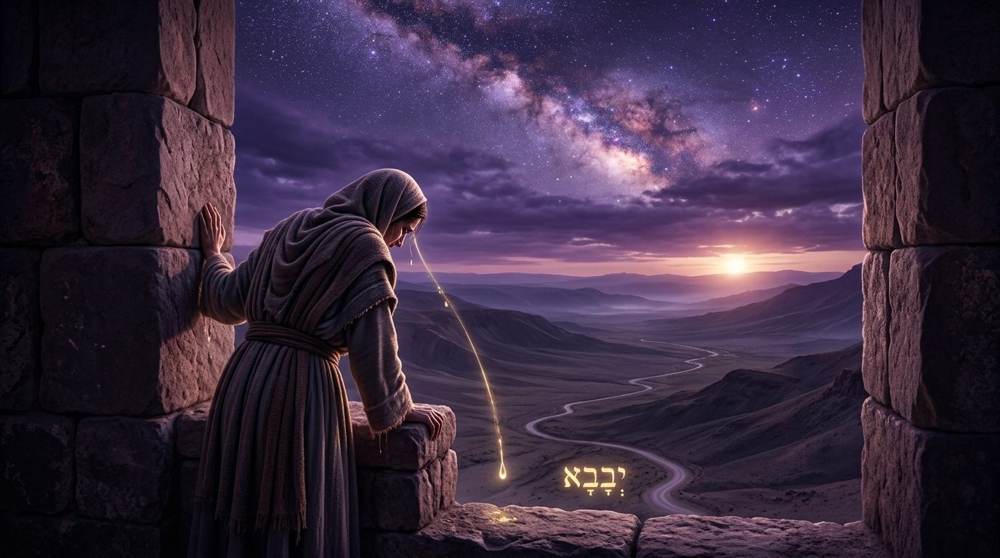
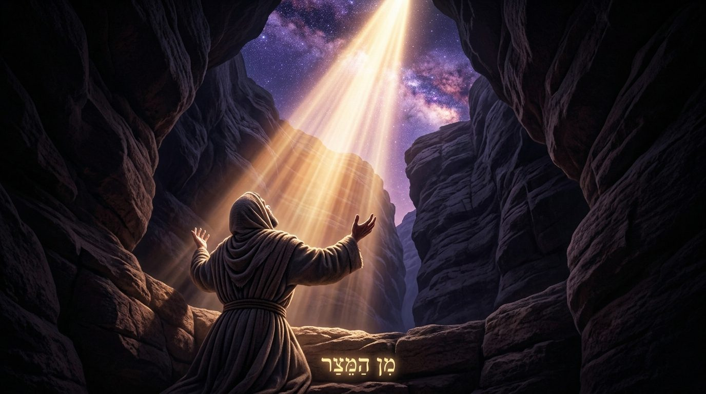
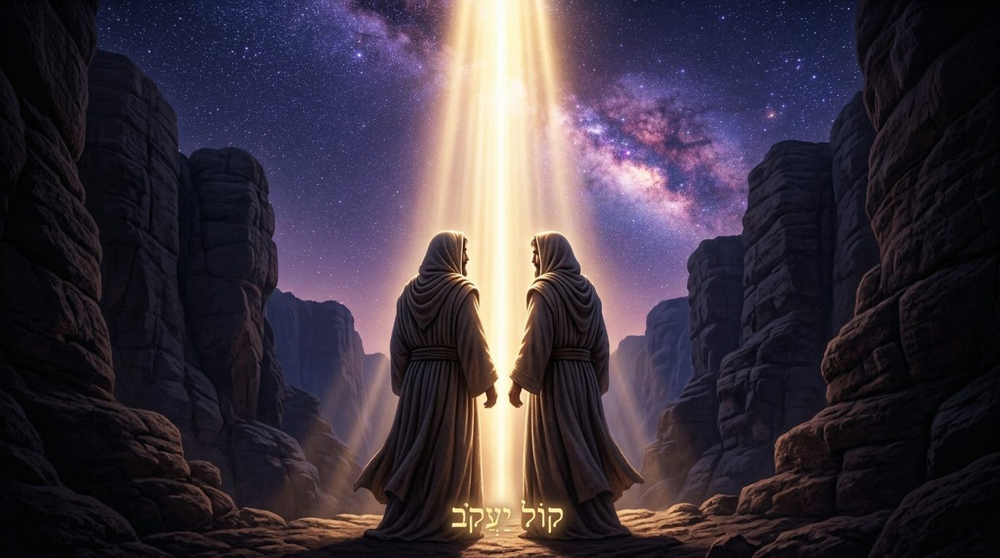
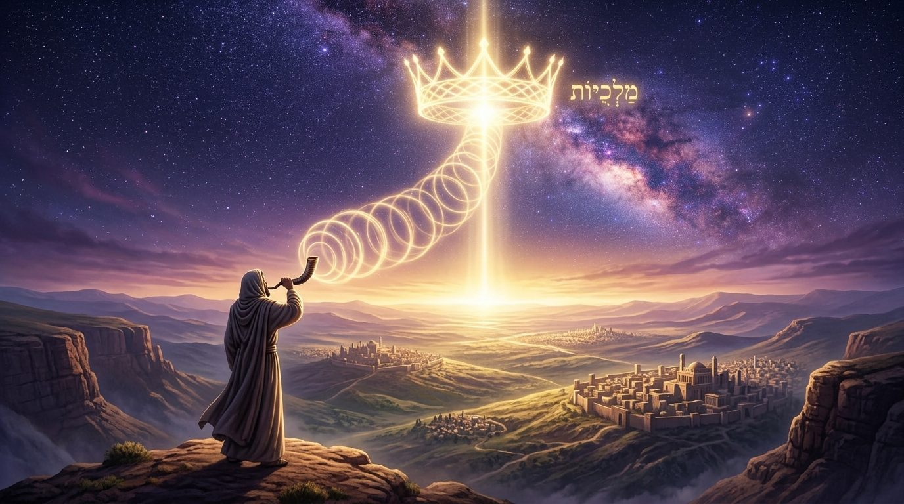
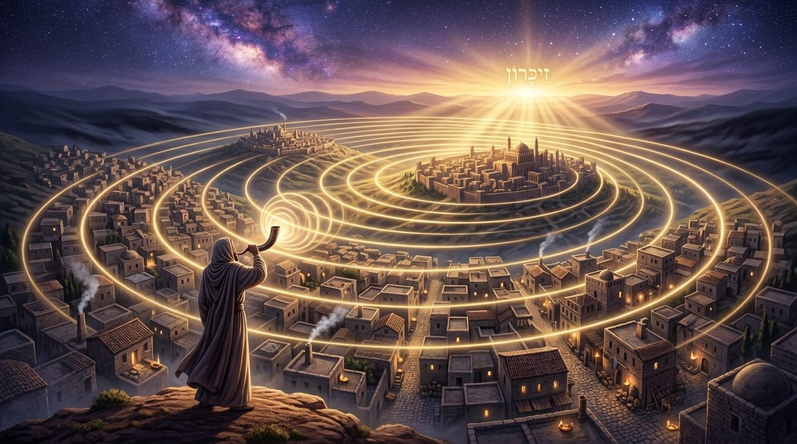

Le cri sans mots
Toute l'année, la Torah nous a demandé une parole ; au dernier Chabbat, elle jurait qu'elle était très proche de nous, dans nos bouches. Et le premier jour de l'année, elle ne demande plus un mot. Elle demande un son. Enquête sur la teroua, ce cri sans paroles que la guemara fait remonter aux larmes d'une mère, que la mystique juive tient pour plus haut que nos fautes, et par lequel nous faisons D.ieu roi.
Nous sortons de six semaines passées sur la parole. Devarim tout entier est le discours de Moché Rabbénou, et Nitsavim, le dernier Chabbat, refermait la série sur un verset qui logeait la mitsva dans la bouche : כִּי קָרוֹב אֵלֶיךָ הַדָּבָר מְאֹד בְּפִיךָ וּבִלְבָבְךָ, « la chose est très proche de toi, dans ta bouche et dans ton cœur ». La parole était à portée, et c'était la bonne nouvelle de l'année qui s'achevait.

Le premier jour de l'année, la Torah déplace tout vers le souffle. Elle ne nous demande plus de parler, mais de sonner : יוֹם תְּרוּעָה יִהְיֶה לָכֶם (Bamidbar 29:1), « ce sera pour vous un jour de teroua ». La mitsva propre à ce jour tient dans le son d'une corne de bélier, un son sans traduction.
Le contraste surprend. On attendrait du jour du jugement une plaidoirie, des arguments, un dossier à défendre. Or, au moment où tout se pèse, la Torah nous retire la parole et nous laisse un cri.
Avec l'aide du Ciel et de nos maîtres, nous verrons pourquoi la paracha du chofar est la plus fermée de la Torah ; ce que veut dire le mot teroua et pourquoi la guemara le fait remonter aux larmes d'une mère ; pourquoi le cri précède la parole et lui survit ; comment le Rambam entend ce son comme un réveil ; pourquoi la voix, selon la mystique juive, reste plus haute que nos fautes ; et comment, d'un seul cri, nous faisons D.ieu roi.
• Un jour où la parole cède au cri
• Le cri le plus fermé de la Torah
• Le cri de la teroua
• Pourquoi le cri d'une mère ennemie
• Le cri d'avant les mots
• Le cri ne convainc pas, il réveille
• Le seul cri qui ne ment pas
• La voix de Yaakov, plus haute que la faute
• Couronner d'un seul cri
• De la bouche au cri : la chaîne se referme
• Un cri dont on se souvient
• Le premier et le dernier cri
Avant même d'écouter le chofar, il faut remarquer la façon dont la Torah en parle, et elle en parle très peu. Là où les autres fêtes reçoivent des sections entières, Roch Hachana se dit en deux mots, זִכְרוֹן תְּרוּעָה, « un souvenir de teroua », sans expliquer ni la forme du son, ni sa raison, ni même que ce jour est le jour du jugement. Rabbeinou Ba'hya s'arrête sur ce silence du texte et en donne la loi.
וּמַה שֶּׁבָּאָה פָּרָשָׁה זוֹ סְתוּמָה יוֹתֵר מִשְּׁאָר פָּרָשִׁיּוֹת הַמּוֹעֲדִים... כִּי כָּל מַה שֶּׁהָעִנְיָן יוֹתֵר נֶעְלָם וְיוֹתֵר פְּנִימִי, הוּא יוֹתֵר סָתוּם, וּבָא הַלָּשׁוֹן בּוֹ בְּדֶרֶךְ קְצָרָה וּבְמִלּוֹת מוּעָטוֹת (Rabbeinou Ba'hya, Vayikra 23:24), « et si cette section est plus fermée que les autres sections des fêtes... c'est que plus une chose est cachée et intérieure, plus elle est close, et plus la langue en parle brièvement, en peu de mots. »
Cette loi de lecture vaut aussi pour le son. Ce qui s'explique demande beaucoup de mots ; ce qui touche à l'intérieur en demande peu. Et l'intérieur le plus profond se sonne. La teroua n'est pas un langage appauvri : elle donne sa forme la plus resserrée à ce qui demeure sous les mots.
Le Sfat Emet donne à ce jour son autre nom mystique. Roch Hachana est la tête de l'année, le point où la vie nouvelle est donnée à toute la création avant de se répartir et de se diviser dans le temps et la matière. הוּא הַמָּקוֹר וְהַהַתְחָלָה קֹדֶם הַהִשְׁתַּנּוּת (Sfat Emet, Roch Hachana), « c'est la source et le commencement, avant le changement ». Or à la source, avant que la vie ne se coule dans des formes et des saisons, il n'y a pas encore de mots ; il y a un jaillissement simple, d'avant le partage. Le son du chofar imite ce point-là : il vient d'avant la parole, de la source où rien n'est encore découpé.
La paracha du chofar est la plus fermée de la Torah parce que le plus intérieur se dit en peu de mots, et le plus intérieur de tout ne se dit plus : il se sonne.
Le mot teroua résiste à la traduction. La Torah ordonne le son sans en décrire la forme ; la guemara doit donc en chercher le sens.
אָמַר אַבָּיֵי: בְּהָא וַדַּאי פְּלִיגִי, דִּכְתִיב יוֹם תְּרוּעָה יִהְיֶה לָכֶם, וּמְתַרְגְּמִינַן יוֹם יַבָּבָא יְהֵא לְכוֹן (Roch Hachana 33b), « Abbayé a dit : sur ceci ils sont certainement en désaccord, car il est écrit “un jour de teroua sera pour vous”, et nous traduisons “un jour de yabava sera pour vous”. »
Le Targoum traduit teroua par יַבָּבָא, yabava. Ce mot araméen ne désigne ni une sonnerie ni une fanfare, mais un sanglot. La guemara le cherche dans un verset où il apparaît, et le lieu qu'elle a retenu est l'un des plus étranges de toute l'Écriture.
וּכְתִיב בְּאִימֵּיהּ דְּסִיסְרָא: בְּעַד הַחַלּוֹן נִשְׁקְפָה וַתְּיַבֵּב אֵם סִיסְרָא (Roch Hachana 33b, citant Choftim 5:28), « et il est écrit au sujet de la mère de Sissera : “par la fenêtre elle s'est penchée et elle a sangloté, la mère de Sissera”. »
Le verbe וַתְּיַבֵּב, « elle a sangloté », partage sa racine avec la yabava du Targoum, et c'est de là que nos maîtres tirent la forme du son. La guemara précise encore la nature du sanglot, et la discussion elle-même éclaire : מָר סָבַר גַּנּוּחֵי גַּנַּח, וּמָר סָבַר יַלּוּלֵי יַלִּיל, « l'un tient que c'est un gémissement, l'autre que c'est une lamentation ». De ce débat entre deux maîtres, naissent nos deux sons brisés, le chevarim qui gémit en trois soupirs longs et la teroua qui se lamente en salves courtes, parce que nul ne sait exactement comment pleure un cœur qui se brise, et que nous faisons donc les deux.
La teroua n'est pas une sonnerie : c'est un sanglot, et la guemara en tire la forme des larmes d'une mère à sa fenêtre.
Ce choix a de quoi nous surprendre. Sissera était un général qui opprimait Israël, et sa mère l'attend à la fenêtre, guettant le char qui ne reviendra pas, car il a été tué le jour même. Le sanglot sur lequel se règle le son le plus sacré de notre année est celui d'une mère ennemie qui pleure un fils tombé en combattant les nôtres.

On aurait pu croire que la Torah irait chercher son modèle de cri dans une bouche plus digne. Les larmes de nos patriarches ne manquent pas dans le texte. Nos maîtres ont pourtant choisi celles-ci, et ce choix enseigne quelque chose sur le cri lui-même.
Dans un sanglot, les différences s'effacent. La mère de Sissera pleure comme pleure toute mère, et sa douleur ne se distingue plus, à cet instant, de celle d'une mère d'Israël. Le cri ramène l'homme là où les titres, les camps et les mérites se taisent, devant ce qui le dépasse. En modelant notre teroua sur ce sanglot, la Torah nous place ainsi devant le jugement : dépouillés de ce qui nous distingue, ramenés à notre humanité la plus nue.
Cette leçon prépare le jugement. Nous montons devant le Roi des rois, avec nos arguments, notre étude, nos bonnes actions, notre repentance. Mais le son placé dans la corne rappelle que ce jour-là, celui qui pleure paraît avant le plaideur.
Le son du jugement se règle sur le sanglot d'une mère ennemie, parce qu'un cri ramène tout homme au point où il n'a plus ni camp ni mérite.
Le cri précède la parole et lui survit. Il vient d'une couche de l'homme plus ancienne que le langage. L'enfant crie avant de savoir parler ; l'homme frappé crie quand les mots l'abandonnent. En nous demandant ce son le premier jour de l'année, la Torah nous ramène sous la parole, à l'endroit d'où elle est sortie.

L'Écriture connaît ce cri maternel. Lorsque Hagar, la servante et concubine d'Avraham, dépose son fils mourant de soif et s'éloigne pour ne pas le voir, le texte dit : וַתִּשָּׂא אֶת קֹלָהּ וַתֵּבְךְּ (Bereshit 21:16), « elle éleva sa voix et pleura ». Le texte ne retient aucune formulation de prière : une voix s'élève, et le verset suivant dit que D.ieu entendit. Cette scène se lit précisément à Roch Hachana, dans la lecture du premier jour, comme si la Torah nous montrait, au seuil de l'année, un cri qui trouve sa réponse, puisque D.ieu épargne alors le fils d’Hagar.
David dit la même chose d'un autre côté. מִן הַמֵּצַר קָרָאתִי יָּהּ, עָנָנִי בַמֶּרְחָב יָהּ (Tehilim 118:5), « depuis l'étroitesse j'ai appelé, Il m'a répondu dans la largesse ». On ne crie pas dans la largesse, on y respire ; on crie depuis l'étroitesse, quand la gorge se serre et que la phrase ne passe plus. Le cri est le langage de l'étroitesse, entendu depuis le lieu même où il se serre.
La teroua imite cette voix. Sa forme même, hachée, entrecoupée, est celle d'une respiration qui n'arrive plus à porter une phrase. Là où la parole construit, articule, argumente, le cri se contente d'être vrai ; il laisse sortir ce qui est.
Le cri précède la parole et lui survit : il est le langage de l'étroitesse, et c'est de là-bas qu'on est entendu.
Le Rambam répond à une question simple : à quoi sert un son qui ne dit rien ? Il déplace alors la mitsva du registre du discours vers celui du réveil.
אַף עַל פִּי שֶׁתְּקִיעַת שׁוֹפָר בְּרֹאשׁ הַשָּׁנָה גְּזֵרַת הַכָּתוּב, רֶמֶז יֵשׁ בּוֹ, כְּלוֹמַר: עוּרוּ יְשֵׁנִים מִשְּׁנַתְכֶם וְנִרְדָּמִים הָקִיצוּ מִתַּרְדֵּמַתְכֶם, וְחַפְּשׂוּ בְּמַעֲשֵׂיכֶם וְחִזְרוּ בִּתְשׁוּבָה וְזִכְרוּ בּוֹרַאֲכֶם (Hil'hot Techouva 3:4), « bien que la sonnerie du chofar à Roch Hachana soit un décret de l'Écriture, elle porte une allusion, comme si elle disait : réveillez-vous, dormeurs, de votre sommeil, et vous les assoupis, sortez de votre torpeur ; examinez vos actes, revenez, et souvenez-vous de votre Créateur. »
Pour le Rambam, le chofar n'explique ni ne démontre : il réveille. Un dormeur n'entend pas les arguments ; il faut un bruit qui traverse le sommeil et le ramène au jour. La parole s'adresse à celui qui écoute déjà. Le cri, lui, va chercher celui qui n'écoute plus.
C'est pourquoi le son se passe de mots. Un discours, même beau, peut glisser sur nous. Le cri d'une corne d'animal, lui, traverse la couche de mots dont nous enveloppons nos vies, la plupart du temps pour nous trouver des excuses ; il nous remet, un instant, en présence de nous-mêmes.
Le Rambam achève sa liste sur un mot qui referme notre chaîne : וְזִכְרוּ בּוֹרַאֲכֶם, « souvenez-vous de votre Créateur ». Le cri rappelle ce que l'on savait déjà et que le bruit de l'année avait recouvert, sans rien ajouter de neuf.
Le chofar ne s'adresse pas à celui qui écoute déjà, il réveille celui qui dort : on ne tire pas un dormeur du sommeil par un raisonnement.
Une parole peut se détacher de ce qu'elle porte. Entre ce que l'on ressent et ce que l'on dit se glissent la politesse, le calcul, parfois le mensonge. On peut dire « je regrette » sans regret, et prononcer une confession entière sans que le cœur n’y soit.
Le cri échappe plus difficilement à cette distance. Il sort avant que l'on ait eu le temps de le composer. Une phrase se travaille alors qu’un sanglot véritable résiste à la mise en scène. La teroua devient ainsi l'acte où l'homme ne présente rien au regard des autres et ne négocie rien avec le Ciel.
La mère de Sissera éclaire ici le tableau. Son sanglot était la vérité nue d'une douleur, sans témoin à convaincre. En réglant notre cri sur le sien, la Torah nous demande cette vérité, dépouillée de mise en scène. Le jour où tout se pèse, elle attend moins notre meilleur discours que le son que nous ne savons pas maquiller.
Nous touchons ici ce que nous cherchions depuis Nitsavim. La parole était proche, dans la bouche, et c'était déjà beaucoup. Mais la parole peut se tenir loin du cœur qu'elle prétend exprimer, tandis que le cri ne se sépare jamais de ce qui le pousse : il est le cœur devenu audible, sans le détour des mots.
Une parole peut se tenir loin du cœur qu'elle exprime ; un cri est le cœur même devenu audible, et c'est ce son-là que le jour du jugement réclame.
Ce que nous venons de voir en langage d'homme, la mystique juive le dit en langage de racines. Le Sfat Emet part d'une question de halakha : la mitsva n'est pas de sonner, mais d'entendre, לִשְׁמֹעַ קוֹל שׁוֹפָר. Pourquoi la Torah insiste-t-elle sur l'écoute, et non sur l'acte de sonner ?

Il répond par un enseignement de nos maîtres : קִלְקַלְתֶּם, הִזָּהֲרוּ בַּנִּשְׁמָע, « vous avez altéré, prenez garde à présent à ce qui s'entend ». Nos fautes de l'année ont touché l'action et la parole, mais elles n'ont pas atteint la voix elle-même.
כִּי הַקּוֹל לֹא קִלְקְלוּ, שֶׁהוּא מָקוֹם גָּבוֹהַּ יוֹתֵר וְקַיָּם לְיִשְׂרָאֵל לְעוֹלָם, כְּמוֹ שֶׁכָּתוּב הַקּוֹל קוֹל יַעֲקֹב (Sfat Emet, Roch Hachana), « car la voix, ils ne l'ont pas altérée, parce qu'elle est un lieu plus élevé et qu'elle demeure à Israël pour toujours, comme il est écrit : la voix est la voix de Yaakov. »
Le Ari Z"L donne à Roch Hachana une image très simple : la nesirah, la séparation. Deux êtres collés dos à dos ne se voient pas. Il faut d'abord les séparer pour pouvoir ensuite les remettre face à face. Ainsi en est-il de D.ieu et de l'homme. Une année de fautes et de distance a réduit leur lien à une posture dos à dos.
Cette séparation peut d'abord ressembler à une perte. Elle rend pourtant possible une rencontre ultérieure, face à face. Le Ari Z"L écrit qu'à Roch Hachana le monde revient à cet état dos à dos, puis traverse la nesirah avant de revenir face à face.
Le mouvement commence dès Roch Hachana. Dans le langage du Ari Z"L, la part qui correspond à la tête est rétablie dès le premier jour ; puis, durant les dix jours jusqu'à Yom Kippour, un degré de la relation se remet chaque jour face à face. À Souccot vient l'enlacement, et à Chemini Atseret, le huitième jour de clôture, l'union s'accomplit. Le cri ne convainc pas : il réveille. Il ouvre ce chemin de retour, de la distance vers la rencontre (Shaar HaKavanot, Deroushey Roch Hachana 6:3).
Il demeure donc en l'homme un niveau que la faute n'atteint pas. Lorsque Its'hak reçoit Yaakov déguisé en Essav, il hésite : « la voix est la voix de Yaakov, mais les mains sont les mains d'Essav » (Bereshit 27:22). Les mains renvoient à l'action visible ; la voix, à ce qui se fait entendre avant même que l'homme agisse. Le Sfat Emet lit dans ce contraste une image de notre service de D.ieu : les actes et les paroles peuvent être abîmés au cours de l'année, et l'on peut alors utiliser ses mains comme Essav, 'has véchalom ; mais le קוֹל, la voix qui les précède et les porte, n'est ni une parole ni un acte. C'est la voix de Yaakov, qui représente l'attribut de la vérité, du Emet, qui demeure à jamais. Le cri du chofar monte de ce lieu que le mensonge n'a pas sali.
C'est pourquoi le jour de la réparation est un jour de son pur. Nous ne réparons pas seulement ce qui a été abîmé dans nos actes et nos paroles : nous remontons à leur racine, là où les mots et les lettres ne sont pas encore déployés. La création se révèle à travers les lettres et les paroles de D.ieu dans Béréchit ; le chofar nous reconduit vers le point premier d'où elles surgissent. De là, la voix que rien n'a corrompue entraîne vers le haut ce qui, plus bas, s'était abîmé.
Nos fautes atteignent la parole et l'acte, jamais la voix nue : le cri monte du seul étage de l'homme que l'année n'a pas pu salir, et c'est de là qu'on répare.
La question est concrète : que fait l'homme, au juste, quand il sonne ? La guemara donne au son sa fonction primordiale.

אָמְרוּ לְפָנַי בְּרֹאשׁ הַשָּׁנָה מַלְכֻיּוֹת זִכְרוֹנוֹת וְשׁוֹפָרוֹת: מַלְכֻיּוֹת, כְּדֵי שֶׁתַּמְלִיכוּנִי עֲלֵיכֶם... וּבַמֶּה, בַּשּׁוֹפָר (Roch Hachana 16a), « dites devant Moi à Roch Hachana des royautés, des souvenirs et des sonneries : les royautés, pour que vous Me fassiez roi sur vous... et par quoi ? par le chofar. »
Le chofar est l'instrument du couronnement. Le premier acte de l'année n'est pas de demander pour soi, c'est de proclamer que D.ieu est notre Roi, et l'avoda du jour tient dans ces mots : כְּדֵי שֶׁתַּמְלִיכוּנִי עֲלֵיכֶם, « pour que vous Me fassiez roi sur vous ». On n'intronise pas un roi par une plaidoirie où l'on défend ses intérêts ; on l'intronise en s'effaçant devant lui, et le cri est l'endroit où l'homme n'a plus rien à faire valoir.
Le Sfat Emet décrit le mécanisme de ce couronnement, et il renverse l'ordre attendu. הָעֶבֶד הַנֶּאֱמָן צָרִיךְ לְבַקֵּשׁ מַלְכוּת הָאָדוֹן עַל כֹּל, רַק עַל יְדֵי שֶׁמְּבַקֵּשׁ זֶה בְּכָל לִבּוֹ מִמֵּילָא מִתְפַּשֵּׁט הַמַּלְכוּת עָלָיו מִקֹּדֶם (Sfat Emet, Roch Hachana), « le serviteur fidèle doit demander la royauté du Maître sur tout ; et parce qu'il le demande de tout son cœur, la royauté s'étend d'elle-même sur lui d'abord. »
Le Sfat Emet éclaire ici le mécanisme du couronnement. Lorsqu'un homme demande de tout son cœur que D.ieu règne sur toute la création, il commence par se placer lui-même sous cette royauté.
Il ne demande pas à devenir roi. Il demande que D.ieu soit reconnu comme Roi de tout. La première place où ce règne prend effet est donc le cœur de celui qui le proclame.
Le chofar donne une voix à ce mouvement : il ne vient pas défendre une cause personnelle ; il fait place à la royauté de D.ieu.
Le Sfat Emet ajoute que ce son redescend vers l'acte : par son écoute, on vient ensuite à la parole (à Kippour) et au geste (à Souccot), לָבוֹא לְמַעֲשֶׂה. Le cri du premier jour est la source d'où l'on revient, l'année durant, vers le service en actes.
Le chofar n'est pas une plaidoirie mais un couronnement : qui veut de tout son cœur la royauté du Ciel la voit se poser d'abord sur lui, et de ce cri redescend, toute l'année, vers l'acte.
Roch Hachana achève la chaîne des dernières semaines plutôt qu'il ne la rompt.
Vaet'hanan a posé le keli, le récipient, nous rappelant que l'homme manque de paroi plutôt que de lumière. Ekev a nommé la seule chose que le Ciel laisse entre nos mains, la crainte du Ciel. Réé a montré que la liberté tient en un point que nous n'avons pas tracé. Choftim a enseigné que ce point n'est gardé que par notre ignorance du lendemain. Ki Tetsé a fait du quotidien le champ où l'on relève des étincelles. Ki Tavo a établi que le salaire de tout cela ne se paie pas ici. Et Nitsavim a refermé la série sur la proximité de la parole : la mitsva de la techouva est près de nous, dans nos bouches.
Roch Hachana prend cette parole toute proche et la conduit à son terme. Toute l'année, on a travaillé avec des mots : étudié, prié, formulé. Quand on paraît devant le Roi, la Torah retire les mots et garde ce qui les portait. Le mouvement du keli va jusque-là : il ne s'agit plus de remplir sa bouche de belles phrases, mais de devenir un récipient assez vrai pour qu'un seul son suffise.
Le chofar suit la même logique que tout ce que nous avons appris. Il réveille et fait monter ce qui était déjà là, dans la poitrine de l'homme. La chose reste proche jusqu'au bout : le cri ne porte pas forcément plus loin que la parole, mais il vient d’un endroit plus profond qu'elle.
Roch Hachana ne rompt pas la chaîne de l'année, il l'achève : la parole toute proche est reconduite au cri qui la portait.
La Torah donne au jour un autre nom qui complète le premier. Elle l'appelle זִכְרוֹן תְּרוּעָה (Vayikra 23:24), « un souvenir de teroua », joignant en deux mots la mémoire et le cri.
On comprend mal, d'abord, ce que le souvenir vient faire dans un son. Pourtant, un cri se grave même si le reste s'efface. Les discours et les résolutions bien formulées de l'année passée s'oublient ; le cri poussé un jour où l'on n'en pouvait plus demeure. Il laisse une trace là où la parole passe.
Rabbeinou Ba'hya donne au souvenir de ce jour son contenu le plus ancien : la teroua rappelle la corne du bélier de l'Akeda, זִכְרוֹן... לִזְכּוֹר לָהֶן עֲקֵדַת יִצְחָק שֶׁקָּרַב תַּחְתָּיו אַיִל (Rabbeinou Ba'hya, Vayikra 23:24), « un souvenir... pour rappeler l'Akeda d'Its'hak, à la place de qui un bélier fut offert ». La corne dans laquelle nous sonnons est celle-là même : un cri qui remonte jusqu'au don le plus nu de nos pères. C'est pourquoi ce jour est le jour de la mémoire. Le Ciel n'a nul besoin qu'on Lui rappelle quoi que ce soit, mais le cri de l'homme rouvre en lui ce que l'année avait enfoui. La teroua déterre le souvenir que le bruit des jours avait recouvert, comme le rappelait déjà le Rambam en concluant sur « souvenez-vous de votre Créateur ».
Le jour se nomme « souvenir de teroua » parce qu'un cri se grave là où la parole passe : il déterre l'Akeda de nos pères et ce que l'année avait enfoui en nous.
Nous entrons ainsi dans l'année par un son. Il nous ramène au cri de l'âme, là où les mots ne suffisent plus, et tout ce que nous avons vu se rassemble dans ce choix.

La Torah aurait pu ouvrir l'année sur un grand discours, une déclaration solennelle, un engagement bien pesé. Elle place au seuil de l'année un cri brut, monté d'une corne et réglé sur le sanglot le plus nu de l'Écriture : celui d'une mère à sa fenêtre. Ce cri accomplit ce que six semaines de paroles préparaient. La mitsva de la techouva est proche, « dans ta bouche » ; le cri est plus proche encore, car il monte de la voix que nos fautes n'ont jamais salie, קוֹל יַעֲקֹב, la voix de Yaakov. Il réveille celui qui dort, se grave dans la mémoire de celui qui le pousse et fait D.ieu notre Roi sans un mot. Au jour du jugement, il ramène l'homme à la vérité qu'un sanglot laisse passer.
Ce jour-là, il ne s'agit plus de trouver les mots justes, mais de laisser monter le son que l'on retient toute l'année parce qu'il ne se compose pas. Nous couronnons le Roi de ce cri, puis nous en redescendons vers l'acte. Une fois l'an, le chofar nous donne cette permission : crier sans phrase, depuis la voix de Yaakov, devant Celui qui entend l'étroit et répond dans le large. Mais ce couronnement ne concerne pas seulement notre vie personnelle. Il annonce le terme de la création : « Hachem sera Roi sur toute la terre ; en ce jour, Hachem sera Un et Son Nom Un » (Zekharia 14:9). À Roch Hachana, le chofar appelle déjà cette royauté universelle. En faisant D.ieu Roi sur nous, nous prenons part à la finalité de la création : que toute créature reconnaisse Son unité et Sa royauté.
| זִכְרוֹן תְּרוּעָה מִקְרָא קֹדֶשׁ | Un souvenir de teroua, une convocation sainte. |
Vayikra 23:24
Shana Tova ! Que nous soyons tous inscrits et scellés pour une bonne année.
Par B.A., à Saint-Mandé, 28 Eloul 5786 / 10 septembre 2026
Yehi Ratson - Que nous sachions, le jour du jugement, déposer nos plaidoiries et laisser monter le cri que nous retenons toute l'année, celui qui ne ment pas et qui n'a pas besoin de mots.
Et que, de la voix de Yaakov que rien n'a salie, nous fassions le Ciel roi de tout notre cœur ; que ce cri, comme celui de l'étroit, soit entendu et nous réponde dans la largesse, pour une année de vie, de santé et de proximité.
| Torah | Talmud |
| Bamidbar 29:1, yom teroua ; Vayikra 23:24, zikhron teroua ; Bereshit 21:16, le cri d'Hagar entendu ; Bereshit 27:22, hakol kol Yaakov ; Tehilim 118:5, min hametsar ; Choftim 5:28, le sanglot de la mère de Sissera ; Zekharia 14:9, Hachem Roi sur toute la terre. | Roch Hachana 33b, teroua = yabava et la forme du son tirée du sanglot ; Roch Hachana 16a et 34b, malkhouyot « pour que vous Me fassiez roi » ; Roch Hachana 26a-b, la mitsva du jour est le chofar. |
| Michna et Midrach | Rishonim |
| Michna Roch Hachana 1:2, les créatures jugées ; le nom de Yom haZikaron ; « vous avez altéré, prenez garde à ce qui s'entend ». | Rambam, Hil'hot Techouva 3:4, le chofar comme réveil ; Rabbeinou Ba'hya, Vayikra 23:24, la paracha fermée et l'Akeda ; Rachi sur Roch Hachana 33b. |
| Mystique | Hassidout |
| Rabbeinou Ba'hya, le plus intérieur est le plus caché ; le keli et la paroi, repris de la chaîne des Devarim ; le Ari Z"L, Shaar HaKavanot, Deroushey Roch Hachana 6:3 : nesirah, du dos à dos au face à face. | Sfat Emet, Roch Hachana : le kol que la faute n'atteint pas, hakol kol Yaakov ; couronner de tout son cœur et le règne se pose d'abord sur soi. |